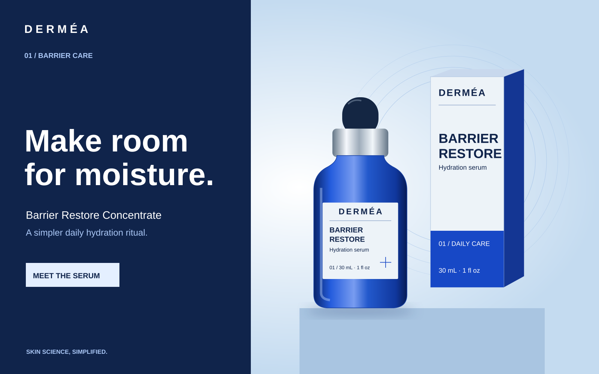

Production / export lab
From master to delivery.
Inspect vector masters and generate PNG/JPEG raster proofs at their original dimensions. Record a six-second 1080 × 1920 product-reveal animation in browsers supporting canvas recording.
Raster proof
Choose artwork to inspect.

Six-second vertical motion
Three beats: campaign hook, illustrated product reveal, closing call to action. Silent, captioned through live canvas text. Browser-recorded WebM where supported.
No video recorded.
Browser-generated RGB proof files only. Verify export visually, ad file limits and required delivery formats. Print conversion and actual platform testing are not included.